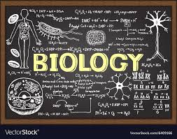

Biology is a main part of science, it is scientific study of life. Biology, study of living things and their vital processes. The field deals with all the physicochemical aspects of life. The modern tendency toward cross-disciplinary research and the unification of scientific knowledge and investigation from different fields has resulted in significant overlap of the field of biology with other scientific disciplines. Modern principles of other fields—chemistry, medicine, and physics, for example—are integrated with those of biology in areas such as biochemistry, biomedicine, and biophysics.
Biology is subdivided into separate branches for convenience of study, though all the subdivisions are interrelated by basic principles. Thus, while it is custom to separate the study of plants (botany) from that of animals (zoology), and the study of the structure of organisms from that of function, all living things share in common certain biological phenomena-for example, various means of reproduction, cell division, and the transmission of genetic material.
